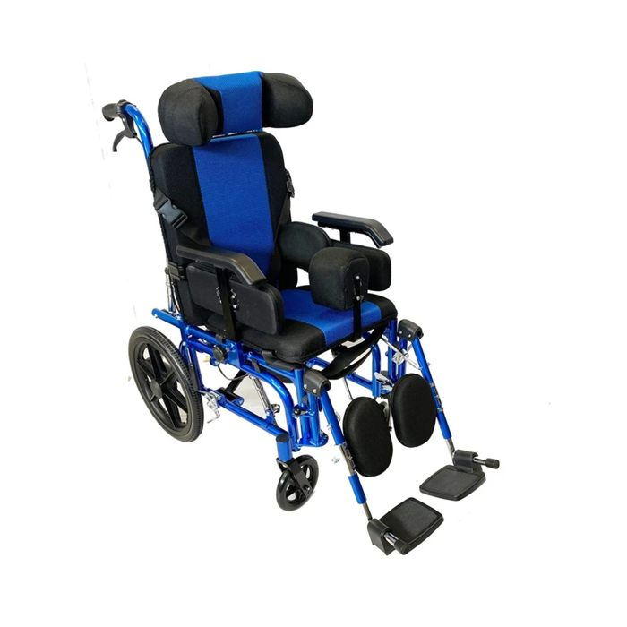

Pensada para niños

Silla de Ruedas Neurológica Pediátrica Reclinable
Para niños que necesitan apoyo postural completo durante buena parte del día, en casa, en el colegio y en terapias.
Ancho asiento40 cm
Profundidad35 cm
Peso máximo100 kg
Peso silla23 kg
- Respaldo reclinable y asiento basculante
- Cabecero regulable en altura y ancho
- Apoyos laterales, cojín entre las piernas y cinturón pélvico en X
- Ruedas traseras de 16" y frenos en ambas ruedas
- Plegada queda en 29 cm de ancho, cabe en el auto
Disponible para ver en bodega
Precio web $399.990
$359.991 -10% convenio
IVA incluido